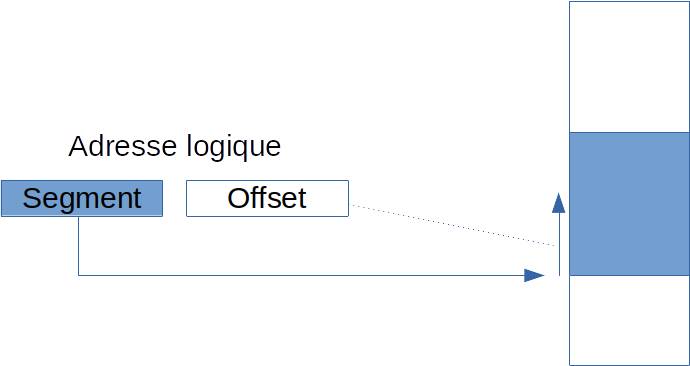
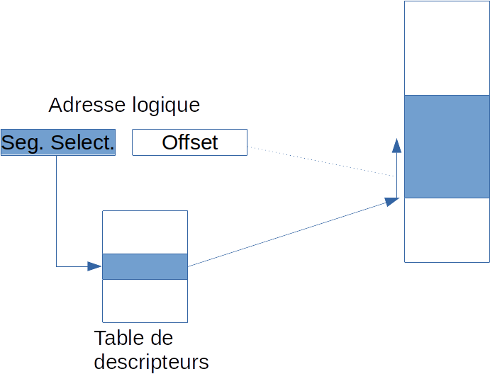
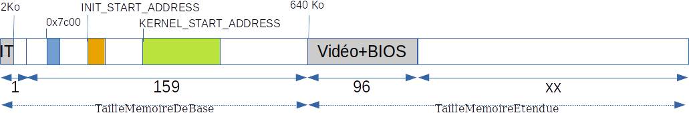
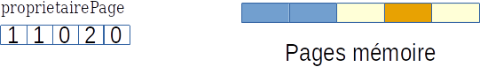

Gestion de la mémoire
La gestion de la mémoire est une fonction essentielle d’un système d’exploitation. Nous allons dans un premier temps jeter un coup d’œuil rapide à la gestion de la mémoire vue par Intel.
Il y a plusieurs concepts à intégrer. Cela peut sembler complexe, mais en prenant un peu de temps, vous vous rendrez compte qu’il n’y a rien de méchant !
Le premier est la segmentation. Pour faire simple, imaginez-vous fin des années 70 avec un microprocesseur dont les registres sont sur 32 bits. Comment adresser plus de 64 Ko ? La segmentation consiste à utiliser deux registres pour composer une adresse de plus de 32 bits. Nous allons voir que ce concept a été enrichi et utilisé à d’autres fins.
Le second est la pagination. L’idée ici est de découper la mémoire en pages de taille fixe. Chaque page pourra être dotée de propriétés qui lui sont propre. La pagination va nécessiter la mise en place d’un certain nombre de tables d’indirection, ce qui peut sembler un peu lourd, mais qui va en particulier permettre de la mémoire virtuelle, de l’isolation entre les tâches, …
La segmentation
Essayons de comprendre ce qui se passe lorsqu’une instruction du processeur doit manipuler une adresse. Nous nous en tiendrons ici à l’architecture des Intel 386.
Imaginons par exemple une instruction qui doit aller lire ou écrire un octet en mémoire ou encore une instruction qui effectue un saut vers une nouvelle zone de code. Une telle instruction va donc exprimer explicitement une adresse, appelée adresse logique. Cette adresse logique est composée de deux parties : un segment, et un offset.
Le segment est une partie de la mémoire, et l’offset un déplacement dans le segment, comme l’illustre la figure 1 ci-dessous. On peut donc voir ça comme une découpe de la mémoire en zones (ou segments) logiques et/ou comme une façon d’accéder à des adresses plus élevées que ce que permet la taille des registres.

Le segment est contenu dans un registre qui peut être fourni explicitement ou implicitement par l’instruction. Il donne donc l’adresse de la zone mémoire que l’on appelle un segment. Sauf que c’est malheureusement un peu plus complexe que ça ! Un segment n’est en effet pas décrit uniquement par son adresse (et quand bien même ! On a dit qu’un registre ne pouvait pas contenir une adresse entière).
En fait, le registre en question permet d’accéder à un descripteur de segment. C’est évidemment ce dernier (que nous allons décrire par la suite) qui donne, entre autres, l’adresse du segment. La figure 2 illustre cette indirection.

Dans les versions antérieures de ses processeurs (et dans le mode “réel” du 386), la mémoire est découpée logiquement en segments. Une adresse est alors désignée par un couple composé d’un registre de segment et d’un registre d’offset.
Concrètement, la taille d’un segment est de 64 Ko (puisque le registre d’offset est sur 32 bits).
À partir du 286 (si je ne me trompe pas), en mode dit “protégé”, un registre de segment devient une référence vers un descripteur de segment. Ce dernier permet une gestion beaucoup plus évoluée de la mémoire.
Les descripteurs de segment sont rassemblés dans une table, la gdt (G*lobal Descriptor Table) ou la ldt (Local Descriptor T*able). Un registre de segment représente alors simplement le décalage d’un descripteur dans la table.
Lorsque l’on utilise un registre de segment, il contient donc en fait l’adresse (dans la ldt ou dans la gdt) d’un descripteur de registre. Ce descripteur contient lui-même l’adresse du segment.
Les descripteurs de segment
La figure [Figure:DescrSegment] montre la structure d’un descripteur de segment.
Dans ManuX, la fonction suivante crée un descripteur de segment et l’ajoute dans la gdt ou la ldt passée en paramètre :
{}
int setDescripteurSegment(DescriptorTable * dt,
uint32 adresse, uint32 limite,
uint8 type,
uint8 gd0a)
Pour cela, elle initalise une structure de type DescSegment définie
dans include/i386/segment.h de la façon suivante
{}
typedef struct _DescSegment {
uint16 limiteFaible;
uint16 baseFaible;
uint8 baseInter;
uint8 type;
uint8 limiteFort;
uint8 baseFort;
} DescSegment;
Les tables de descripteurs de segments ldt et gdt
La gdt est donc la table globale contenant les descripteurs de segment du système.
Dans ManuX, elle est initialisée par la fonction suivante
{}
void initialiserGDT();
Pour le moment, cette fonction est la plus simple possible, elle crée quatre descripteurs de segments
-
un descripteur nul, obligatoire ;
-
un descripteur pour le segment de code, occupant les 4 Go de base ;
-
un descripteur pour le segment de données, occupant les 4 Go de base ;
-
un descripteur pour le segment de pile, occupant les 4 Go de base.
Les trois segments se recouvrent donc.
La ldt est une table similaire à la gdt mais spécifique à une tâche. Dans ManuX, pour le moment, elle est initialisée, lors de la création de chaque tâche, comme une copie de la gdt.
La segmentation dans Manux
Nous allons utiliser dans ManuX un mode “à plat” (ou flat mode). Dans ce mode minimaliste, deux segments seront définis, l’un pour le code, l’autre pour les données, chacun couvrant l’intégralité de la mémoire de 0 à 4 G.
L’avantage de ce modèle est sa grande simplicité. Un de ses inconvénients est le fait que la mémoire est à la fois visible au travers d’un segment de code (donc exécutable) et d’un segment de données (donc modifiable). De ce fait, aucun contrôle n’est fait ici permettant d’éviter que du code soit modifié, …
La mise en place de ce mode segmentation est réalisée dans le fichier
i386/segment.c par la fonction initialiserGDT() qui construit les
descripteurs de segments en question et les insère dans la gdt. Cette
dernière est ensuite activée sur le système par un appel à la fonction
chagerGDT().
L’adresse de la gdt est définie de façon statique au travers de la macro
MANUX_ADRESSE_GDT dans manux/config.h. Une page complète lui est
réservée, ce qui est plus que suffisant, surtout tant que l’on utilise
le format à plat, qui ne nécéssite que 4 entrées (de 8 octets chacune) !
Adresse linéaire et adresse physique
C’est finalement relativement simple, non ? Alors continuons, …
L’adresse ainsi obtenu est une adresse qualifiée de linéaire. La structure d’une adresse linéaire est donnée dans la figure [Figure:addlin].

Les bits de poids forts (Dir) donnent la position dans le répertoire
de page de l’adresse d’une table de pages. Les bits suivants (Page)
donnent la position dans dans cette table de l’adresse d’une page en
mémoire. Les derniers bits (Offset) donnent alors la position
recherchée dans cette page.
Bien entendu, toutes les tables évoquées ici sont stoquées en mémoire.
La mémoire virtuelle
Les processeurs Intel offrent depuis le 386 un mécanisme appelé pagination permettant de définir un espace d’adressage virtuel qui est réparti sur un espace d’adressage physique. Une partie de cet espace physique peut être située ailleurs qu’en mémoire centrale, ce qui permet de construire une mémoire virtuelle plus grande que la mémoire réellement disponible.
De plus, la gestion de la pagination peut être spécifique à chaque tâche, ce qui permet de construire un système multitâche dans lequel chaque tâche a une vision de l’espace mémoire qui lui est propre.
Il y a donc deux problèmes à résoudre, que sont l’organisation de la mémoire physique (et sa répartition entre les différentes tâches) et l’organisation de la mémoire virtuelle vue par une tâche. Nous allons voir comment ils sont résolus dans Manux, mais regardons d’abord un peu comment la pagination est mise en œuvre.
Pagination
Le mécanisme de pagination des processeurs Intel permet, comme l’illustre la figure [Figure:Pagination], de construire une mémoire virtuelle, découpée en pages (de 4 Ko) à partir de pages physiques situées “n’importe où” en mémoire physique (ou même sur un autre support tel qu’un disque dur ou autre).
Le processeur offre (via sa mmu) des mécanismes évolués permettant la mise en place de la pagination. La pagination est activée en positionnant à un le bit 31 du registre cr0.
Lorsque la pagination est activée, le registre cr3 doit contenir l’adresse (physique) d’une page mémoire contenant le répertoire de pagination .
Gestion de la mémoire physique dans ManuX
La mémoire physique est partagée entre une partie système et une partie application. La première partie est dédiée à la gestion du système et la seconde et utilisée pour satisfaire les besoins en mémoire des différentes applications.
Au niveau système, la mémoire est gérée par page (une gestion plus fine doit donc être implantée au niveau application, par le biais des librairies).
Organisation de la mémoire physique
Traditionnellement, sur un PC, la mémoire physique est organisée comme décrit par la figure [etat-memoire-base].
Une partie est réservée pour le bios et la vidéo, nous nous garderons bien d’aller y lire ou écrire pour autre chose !
L’état de cette mémoire à la fin du boot (décrit plus haut) est donné par la figure [etat-memoire-boot-2] que nous redonnons ici.

Il est important de l’avoir en tête pour la suite afin de déterminer quelles sont les zones que nous pouvos allouer et celles qui ne doivent pas être utilisées.
Allocation de la mémoire
Chaque page mémoire peut être allouée à une tâche (ou au noyau) ou libre
(non allouée). C’est le tableau proprietairePage défini dans le
fichier noyau/memoire.c qui définit cela comme illustré par la figure
[Figure:ProprietairePage].
Une page libre sera associée à un propriétaire nul et une page allouée
au système à la tâche 1.

Initialisation
Allocation
Deux fonctions permettent d’allouer une page mémoire, ce sont
{}
void * allouerPageSysteme();
void * allouerPage();
qui permettent d’obtenir respectivement une page mémoire système et une page mémoire application.
Gestion fine de la mémoire dans le noyau
L’allocation de la mémoire physique page par page et importante, mais il est également très utile de pouvoir allouer la mémoire avec une granularité bien plus fine. Tous les sous-systèmes du noyau qui ont besoin d’allocation dynamique manipulent des objets qui sont pour la plupart bien plus petits qu’une page !
On peut alors envisager deux grandes familles de techniques : un allocateur “généraliste” (qui va fournir un service tel que le malloc classique de la librairie C) ou un allocateur plus spécialisé (qui permettra une gestion bien plus efficace d’un type d’objets unique avec éventuellement un système d’initialisation, etc ...)
Un allocateur généraliste
Dans ManuX, un système d’allocation fine est implanté dans les fichiers kmallc-zs.h et .c. Il utilise la technique des “zones siamoises” ou buddy memory allocation system.
Il fournit essentiellement les trois fonctions suivantes
void kmallocInitialisation();
void * kmalloc(size_t n);
void kfree(void * p);